AI-DLC 밖의 지도
2025~2026년에 나온 AI 개발 방법론은 다루는 범위가 제각각이다. 기획부터 운영까지 생애주기 전체를 다루는 것은 AI-DLC와 BMAD 정도다. 나머지는 기능 하나를 명세에서 구현까지 끌고 가는 구간이나, 그보다 아래의 작업 습관과 기반 기술을 다룬다. 그래서 서로 경쟁하기보다 층을 나눠 함께 쓴다.
출발점: 바이브 코딩과 에이전틱 엔지니어링
Karpathy, 2025-02 X 게시(2차 인용). Simon Willison, 「Vibe engineering」, 2025-10-07. Addy Osmani, 「Agentic Engineering」, 2026-02-04.
모든 방법론을 놓을 좌표축은 이것이다. Karpathy가 이름 붙인 바이브 코딩은 "분위기에 맡기고 코드가 있다는 것조차 잊는" 방식이다. 그 스스로 "버려도 되는 주말 프로젝트에는 나쁘지 않다"고 했다. 반대쪽 끝이 에이전틱 엔지니어링이다. AI가 구현하고 아키텍처·품질·정확성은 사람이 책임진다.
Osmani는 둘을 가르는 기준을 한 문장으로 정리한다. "차이는 AI를 쓰느냐가 아니라 결과를 어떻게 검증하느냐다." 가장 큰 차이를 만드는 것은 테스트다. 바이브 코딩은 시작이 싸고 운영이 비싸며 에이전틱 엔지니어링은 스키마·테스트·구조화된 컨텍스트에 처음 돈이 들지만 기능당 비용이 낮다. AI-DLC는 이 축의 에이전틱 엔지니어링 끝에 있고 그것을 개인 너머 팀과 조직으로 넓힌 방법론이다.
바이브 코딩의 비용을 보여 주는 수치
Lovable로 생성한 앱 1,645개 중 170개가 개인정보를 노출했다(2025-05). METR의 무작위 대조 실험에서 숙련 개발자가 AI 도구를 쓰니 19% 느려졌다(2025-07). AI가 함께 쓴 PR에서 보안 취약점이 2.74배 많았다는 분석도 있다(2025-12). 위키백과가 인용한 연구들이다.
네 개의 층
| 층 | 다루는 것 | 방법론 |
|---|---|---|
| 생애주기 | 기획부터 운영·회고까지, 팀 의식과 역할, 조직 승인 | AI-DLC, BMAD |
| 기능 | 기능 하나를 명세 → 설계 → 작업 → 구현으로 | GitHub Spec Kit, Kiro, OpenSpec, Tessl, Agent OS, Google Conductor |
| 작업 습관 | 세션 하나, 작업 하나를 어떻게 굴리나 | Claude Code 권장 흐름, Research→Plan→Implement, Superpowers, Compound Engineering, Ralph loop |
| 기반 | 에이전트에게 무엇을 보여 주고 어떤 환경에서 어떻게 검증하나 | 컨텍스트 엔지니어링, 하네스 엔지니어링 |

위층은 아래층을 품는다. AI-DLC의 Construction 안에서 Unit 하나를 명세 → 설계 → 작업 문서로 쓰고 Bolt 하나를 작은 계획·실행으로 돌리고 그 전부를 하네스(규칙, 린터, 검증 명령)가 받친다.
범위와 무게로 놓아 보기
가로축은 범위(개인 작업 습관 → 팀·조직 생애주기), 세로축은 형식성(가벼움 → 무거움)이다. 위치는 각 방법론의 공식 문서를 읽고 매긴 서로 견준 판단이다.
컨텍스트 엔지니어링은 모든 방법론의 바탕 기술이라 이 평면에 따로 두지 않았다. 하네스 엔지니어링은 형식성이 높지만 그 대상이 프로세스 문서가 아니라 저장소 환경(린터, 구조 테스트, CI)이라 "무거운 방법론"과는 성격이 다르다.
생애주기 층: BMAD
bmad-code-org/BMAD-METHOD. 안정판 v6.12.4(2026-10). v7은 프리뷰 알파이며 README가 2026년 11월 중순 출시를 예고했다. 정식 출시 여부는 확인하지 못했다.
Brian Madison이 만든 "Breakthrough Method for Agile AI Driven Development". 애자일 팀의 역할을 AI 페르소나로 옮겼다. 분석가, PM(PRD 작성), PO(에픽·스토리), UX, 아키텍트(아키텍처 골격과 ADR), 개발자가 각자 소유한 문서를 쓴다. 문서 하나를 쓰는 스킬은 정확히 하나다.
- 단위: Initiative → Epic(스토리 8~12개) → Story(빌드 세션 1회, 약 500줄 변경). AI-DLC의 Intent → Unit → Bolt와 거의 같은 계층이다.
- 흐름(v7): Clarify → Plan → Build and verify → Learn and adjust. 순서는 고정돼 있지 않고 입력이 있는 곳에서 들어간다.
- 승인: 빌드는
built에서 멈추고done은 사람만 찍는다. 조직용 사인오프 다섯 개(PRFAQ 판정, PRD 검증, 아키텍처 골격 리뷰, 티켓 분해 승인, 회고 판정)가 감사 기록이 된다. - 변화: v7에서 "Plan thin, refine later"로 바꿔 스토리를 미리 다 쓰지 않는다. 큰 설계를 앞에 몰아서 한다는 비판을 받아들인 것으로 보인다.
AI-DLC와 가장 큰 차이는 사람 팀의 위치다. BMAD는 애자일 역할을 AI 페르소나로 대체하고 AI-DLC는 사람 팀이 한자리(몹)에 모여 AI와 함께 정교화한다. BMAD에는 운영 단계 대신 회고가 있다.
기능 층: 명세 주도 개발(SDD)
Birgitta Böckeler, 「Understanding Spec-Driven-Development: Kiro, spec-kit, and Tessl」, martinfowler.com, 2025-10-15.
"명세가 원본이고 코드는 결과물"이라는 생각에서 출발한 계열이다. Böckeler는 이것을 셋으로 나눈다. 작업 전에 명세를 쓰는 spec-first, 작업 뒤에도 명세를 남겨 유지보수에 쓰는 spec-anchored, 명세만 고치고 사람은 코드를 건드리지 않는 spec-as-source. 지금 도구 대부분은 spec-first에 머문다.
GitHub Spec Kit
github/spec-kit, 2025-09-02 공개, MIT.
"명세가 코드를 섬기는 것이 아니라 코드가 명세를 섬긴다." 명령 하나가 산출물 하나를 만든다.
/speckit.constitution # 프로젝트당 1회. 원칙(테스트 먼저, 단순성 …)
/speckit.specify # specs/003-chat-system/spec.md — 모르면 [NEEDS CLARIFICATION: 질문]
/speckit.clarify # 한 번에 최대 5개 질문, 답을 spec에 반영
/speckit.plan # plan.md · research.md · data-model.md · contracts/ · quickstart.md
/speckit.tasks # tasks.md — 스토리별 단계, 병렬 가능은 [P]
/speckit.analyze # 읽기 전용. spec·plan·tasks 사이 빈틈 보고
/speckit.implement # 단계별 실행, 끝난 작업은 [X]
/speckit.converge # 2026 추가. 코드와 명세를 대조해 수렴 작업을 덧붙임AI-DLC와 비교하면 constitution은 조직 규칙, specify·clarify는 Mob Elaboration의 질문, plan → tasks → implement는 Construction에 대응한다. 다만 단위가 기능 브랜치 하나이고 Intent → Unit 같은 상위 분해와 팀 의식, 운영 단계가 없다.
Kiro
kiro.dev, 2025-07 프리뷰, 2025-11 GA. AWS가 만든 IDE·CLI.
프롬프트 속 가정을 명시적으로 드러내는 명세 기반 IDE다. 기능마다 .kiro/specs/<feature>/에 세 문서를 둔다.
requirements.md: 사용자 스토리 + EARS 수용 기준(WHEN 조건 THE SYSTEM SHALL 동작)design.md: 아키텍처, 시퀀스, 인터페이스, DB 스키마- 작업 목록: 요구사항에 연결된 작업과 하위 작업
여기에 steering(product.md·tech.md·structure.md 같은 상시 규칙)과 hooks(파일 저장·도구 사용 전후 자동 실행)가 붙는다. 버그용 명세는 현재 동작, 기대 동작, 그리고 바뀌면 안 되는 동작(SHALL CONTINUE TO)을 나눠 쓴다. Kiro는 도구이고 AI-DLC는 방법론이라 층위가 다르다. 실제로 aidlc-workflows는 Kiro를 실행 환경으로 지원한다.
OpenSpec
Fission-AI/OpenSpec, MIT. "fluid not rigid, built for brownfield".
기존 시스템을 고치는 데 가장 강한 SDD다. 명세는 시스템이 지금 어떻게 동작하는지 적은 진실이고 변경은 그에 대한 제안이다.
openspec/specs/<capability>/spec.md # 현재의 진실
openspec/changes/<name>/ # 제안 중인 변경 하나
├── proposal.md · design.md · tasks.md
└── specs/ # 델타: ## ADDED / MODIFIED / REMOVED Requirements
openspec/changes/archive/2026-11-21-<name>/ # 끝나면 델타를 진실에 합치고 보관변경 하나는 AI-DLC의 Intent와 비슷한 크기다. 명세를 기능(capability) 단위의 누적 진실로 계속 유지한다는 점이 다른 SDD와 다르다. 이 저장소의 이슈 문서 + 기능 문서 구조와 같은 발상이다.
Tessl · Agent OS · Conductor
- Tessl: 명세를 코드베이스의 장기 기억으로 두고 테스트와 묶는다. 라이브러리 사용법 명세 1만여 개를 레지스트리로 배포해 API 환각을 막는다. spec-as-source를 가장 멀리 밀어붙인 비전이지만 2026년에는 스킬 패키지 관리자로 방향을 틀었다.
- Agent OS(Builder Methods): 팀의 코딩 표준과 제품 맥락을 에이전트에 주입하는 표준 계층이다. v3(2026-01)에서 구현·오케스트레이션 단계를 걷어내고 "AI 코딩 도구가 크게 발전했다"며 Claude Code 계획 모드에 맡겼다.
- Google Conductor(Gemini CLI 확장, 2025-12 프리뷰): "두 번 재고 한 번 자른다." 제품·스택 맥락을 먼저 세우고 트랙마다 계획을 승인받은 뒤 구현한다.
작업 습관 층
Claude Code 권장 흐름
원문 「Claude Code: Best practices for agentic coding」(2025-04)은 2026-01부터 유지되지 않고 공식 문서가 현행이다.
탐색 → 계획 → 구현 → 커밋. 탐색과 계획을 빼면 바로 코딩으로 뛰어든다. 테스트를 먼저 쓰고 실패를 확인한 뒤 커밋하고 테스트를 고치지 않고 통과할 때까지 구현한다. 현행 문서는 여기에 중요한 구분을 더한다.
- 모델이 판단하는 지시: 프롬프트, CLAUDE.md, 스킬. 모델이 따를 수도 안 따를 수도 있다.
- 하네스가 강제하는 지시: hooks, 거부 규칙, Stop hook, CI, 브랜치 보호. 예외가 없어야 하는 규칙은 여기에 둔다.
명세 인터뷰("명세를 쓸 수 있을 때까지 나를 인터뷰하고 SPEC.md에 써라")는 Mob Elaboration의 1인 버전이다. 계획 모드에서 승인 전에 편집하지 않는 것은 AI-DLC 승인 게이트의 축소판이다.
Research → Plan → Implement (HumanLayer)
코드베이스 조사 문서 → 단계·파일·검증을 명시한 계획 → 단계별 구현. 핵심 근거는 리뷰의 지렛대다. "계획의 잘못된 한 줄은 코드 수백 줄을 망친다." 하루에 Go 코드 2,000줄은 읽을 수 없어도, 잘 쓴 구현 계획 200줄은 읽을 수 있다. 그래서 코드보다 조사와 계획을 리뷰한다. AI-DLC가 Construction보다 Inception의 승인에 무게를 두는 이유와 같다.
Superpowers
Jesse Vincent의 스킬 묶음이다. 브레인스토밍(질문하고 설계를 조각내 승인받기) → git worktree → 2~5분 단위 작업 계획(파일 경로·코드·검증 명시) → 작업마다 새 서브에이전트 실행과 2단계 리뷰 → TDD(테스트 전에 쓴 코드는 지운다) → 브랜치 마무리. 개인 단위의 "AI가 묻고 사람이 승인하고 계획대로 실행"을 가장 엄격하게 정형화했다.
Compound Engineering (Every)
"엔지니어링 작업 하나하나가 다음 작업을 더 쉽게 만들어야 한다." 계획 → 작업 → 리뷰 → 축적(Compound) → 반복. 네 번째 단계에서 배운 것을 다음 세션이 읽는 파일(docs/solutions/, CLAUDE.md)에 넣는다. 시간은 계획과 리뷰에 80%, 작업과 축적에 20%를 쓴다. 원칙 하나가 AI-DLC와 정확히 통한다. "침묵은 승인이 아니다. 결정이 없다는 뜻이다."
Ralph loop
Geoffrey Huntley가 만든 가장 단순한 형태의 자율 루프다. while :; do cat PROMPT.md | claude ; done. 매번 새 컨텍스트에 같은 계획과 명세를 넣고 한 바퀴에 작업 하나만 한다. 테스트·빌드·타입 검사가 역압 역할을 한다. 사람은 "루프 안이 아니라 루프 위에 앉는다." 그린필드 부트스트랩에는 강하지만 기존 코드베이스에는 약하고 권한 확인을 끄고 돌리므로 샌드박스만이 보안 경계다. 승인이 거의 없는 반대편 극단이지만 "명세 → 계획 → 작업 하나씩 구현·검증"이라는 내부 구조는 Bolt 하나의 실행 엔진으로 쓸 수 있다.
기반 층: 컨텍스트·하네스 엔지니어링
컨텍스트 엔지니어링
Anthropic, 「Effective context engineering for AI agents」, 2025-09-29. Thoughtworks Technology Radar 2026-04 Adopt.
"최적의 토큰 집합을 고르고 유지하는 전략." 컨텍스트가 길어질수록 회상이 떨어지므로(context rot), 경로나 쿼리 같은 가벼운 식별자만 들고 있다가 필요할 때 읽고 긴 작업은 압축·구조화된 노트·서브에이전트로 나눈다. AI-DLC가 단계마다 산출물을 남기고 다음 단계가 그것을 읽는 구조는 압축을 일부러 프로세스로 만든 것이다.
하네스 엔지니어링
Mitchell Hashimoto, 2026-02-05 · OpenAI Ryan Lopopolo, 「Harness engineering」, 2026-02-11 · Böckeler, martinfowler.com, 2026-04-02.
"에이전트가 실수할 때마다, 다시는 그 실수를 하지 않도록 해법을 설계한다."(Hashimoto) OpenAI는 이것을 "사람은 방향을 잡고 에이전트는 실행한다"로 요약한다. 사람의 일은 환경을 설계하고 의도를 명세하고 피드백 루프를 만드는 것이다.
- OpenAI 사례: 약 100줄짜리 목차 AGENTS.md, 기록 시스템으로서의
docs/(설계 문서, 실행 계획, 기술 부채), 오류 메시지에 고치는 방법까지 담은 커스텀 린터, 고정된 레이어 구조 테스트, 문서 최신성 CI. 5개월, 약 100만 줄, PR 약 1,500건(자체 보고). - Böckeler의 정리: 에이전트 = 모델 + 하네스. 하네스는 미리 안내하는 guide와 결과를 감지하는 sensor로 나뉘고 각각 결정적인 것(테스트, 린터)과 추론하는 것(LLM 리뷰)이 있다.
AI-DLC가 단계·의식·승인이라는 프로세스를 정한다면, 하네스 엔지니어링은 에이전트가 일하는 환경과 검증 루프를 정한다. 둘은 보완 관계다. 다만 긴장도 있다. OpenAI 사례는 사람 리뷰를 최소화하고 자동 병합까지 가는데, AI-DLC는 사람 승인을 중심에 둔다. 둘을 잇는 개념이 아래의 위험 등급별 감독이다. 이 저장소(harness-starter-kit)는 이름 그대로 이 층을 깔아 주는 도구다.
한 장 비교표
| 방법론 | 단위 | 주요 산출물 | 사람이 개입하는 곳 | 강점 | 약점 |
|---|---|---|---|---|---|
| AI-DLC | Intent → Unit → Bolt | 스토리·NFR·위험, Unit·계약, 도메인·논리 설계, ADR, 배포 유닛 | 단계마다 승인, Mob Elaboration·Construction | 팀 의식, 생애주기 전체, 추적성 | 무겁다, 기반(CI·테스트)이 약하면 효과 없음, 토큰 비용 |
| BMAD v7 | Initiative → Epic → Story | PRD, 아키텍처 골격·ADR, 에픽·스토리 파일 | 가정 해소, done 표시, 조직 사인오프 5개 | 문서 소유권 분명, 감사 대응 | 문서 난립, 버전마다 대개편 |
| Spec Kit | 기능 브랜치 | constitution, spec, plan, tasks | 단계별 검토, clarify, 테스트 승인 | 단계 명확, 추측 금지 표식 | 중간 크기 기능에도 과함, 마크다운 과다 |
| Kiro | 기능 명세 | requirements(EARS), design, 작업, steering, hooks | 요구사항 확인 후 설계, 작업별 diff | EARS → 속성 기반 테스트, IDE 통합 | 도구 종속, 작은 버그엔 과함 |
| OpenSpec | 변경(change) | proposal, design, tasks, 명세 델타 | 제안 검토 후 적용 | 가벼움, 브라운필드, 누적 진실 | 보관 단계 형식 오류 보고 |
| Claude Code 권장 | 세션·작업 | CLAUDE.md, rules, skills, SPEC.md, hooks | 계획 승인, 커밋·병합 | 즉시 적용, 결정적 강제 구분 | 팀 역할·생애주기 없음 |
| RPI | 작업 | research, plan, progress | 조사·계획 리뷰 | 리뷰 지렛대, 큰 브라운필드 | 숙련 필요, 비용 큼 |
| Superpowers | 설계 → 2~5분 작업 | 설계 문서, 구현 계획 | 설계 승인, 병합 방식 선택 | TDD·리뷰 강제 | 개인 단위 |
| Compound | 기능 1건 루프 | plans, solutions, CLAUDE.md | 계획 승인, 리뷰 분류, 병합 | 학습이 쌓인다 | 생산성 수치 근거 없음, 지침 비대화 |
| Ralph loop | 루프 1회 = 작업 1개 | PROMPT, specs, 구현 계획 | 명세 작성, 관찰·리셋 | 무인 대량 진행 | 비결정성, 권한 우회 위험 |
| 하네스 엔지니어링 | 저장소·환경 | 목차 AGENTS.md, docs/, 린터·구조 테스트·CI | 우선순위·수용 기준, 실패 원인 진단 | 실수를 구조로 제거 | 장기 일관성 미지수, 행동 검증이 약함 |
2026년의 흐름: 가벼워진다
Thoughtworks Radar, 2026-11. "AI-driven documentation sprawl"(Caution)이 Spec Kit과 BMAD를 이름으로 든다.
여러 출처가 같은 방향을 가리킨다. 모델과 하네스가 좋아질수록 무거운 단계형 워크플로의 가치가 줄어든다.
- Agent OS v3가 구현 단계를 걷어내고 계획 모드에 맡겼다.
- BMAD v7이 "얇게 계획하고 나중에 다듬는다"로 바꿨다.
- Claude Code 공식 문서에 "이제 그만해도 되는 것" 장이 생겼다. 대문자 강조, think 키워드, 공격적인 컨텍스트 관리 같은 것들이다.
- Thoughtworks는 SDD를 현판에서 뺐다. 대신 AI가 만든 문서가 쌓여 에이전트 컨텍스트까지 오염시키는 "문서 난립", 지침을 쌓기만 하는 "지침 비대화"를 Caution으로 올렸다.
- 같은 레이더가 Human-in-the-loop theater(평가할 수 없는 diff를 형식적으로 승인하는 것)를 경고하고 대안으로 위험 등급별 감독(Risk-tiered human oversight, Trial)을 제시했다.
AI-DLC를 들일 때 이 흐름이 뜻하는 것
AI-DLC는 이 지도에서 가장 무거운 쪽에 있다. 모든 일에 전체 절차를 돌리면 문서 난립과 겉치레 승인이 동시에 온다. 그래서 v2가 스코프를 11종으로 나눴고 실무에서는 위험과 크기에 따라 깊이를 고르는 것이 도입의 핵심이 된다. 승인 게이트는 사람만 판단할 수 있는 결정(경계, 계약, 트레이드오프, 권한, 동시성)에 모은다. 05장의 깊이 표가 이 기준이다.
어떻게 조합하나
층마다 맞는 것을 골라 함께 쓴다.
| 층 | 무엇을 빌려 오나 |
|---|---|
| 생애주기 | AI-DLC의 Intent → Unit → Bolt, Mob Elaboration, 단계 승인, 운영 → 다음 Inception 피드백 |
| 기능 | 추측 금지 표식([NEEDS CLARIFICATION])과 질문 정리, Kiro의 EARS 수용 기준, OpenSpec의 "이슈 문서는 변경, 기능 문서는 현재 진실" |
| 작업 습관 | RPI의 "코드보다 계획을 리뷰", Superpowers의 작은 작업 계획과 TDD, Compound의 "배운 것을 파일로" |
| 기반 | 하네스 엔지니어링의 결정적 강제(린터, 구조 테스트, 검증 명령), 컨텍스트 엔지니어링의 단계별 압축 |
이 장의 출처
- SDD: Böckeler, martinfowler.com · GitHub Spec Kit · Kiro specs · OpenSpec · Tessl · Agent OS
- 생애주기: BMAD Method 문서
- 작업 습관: Claude Code best practices · HumanLayer ACE-FCA · Superpowers · Compound Engineering · Ralph
- 기반: Anthropic, context engineering · Hashimoto · OpenAI, harness engineering · Böckeler, harness engineering
- 축: Willison, vibe engineering · Osmani, agentic engineering · Thoughtworks Radar